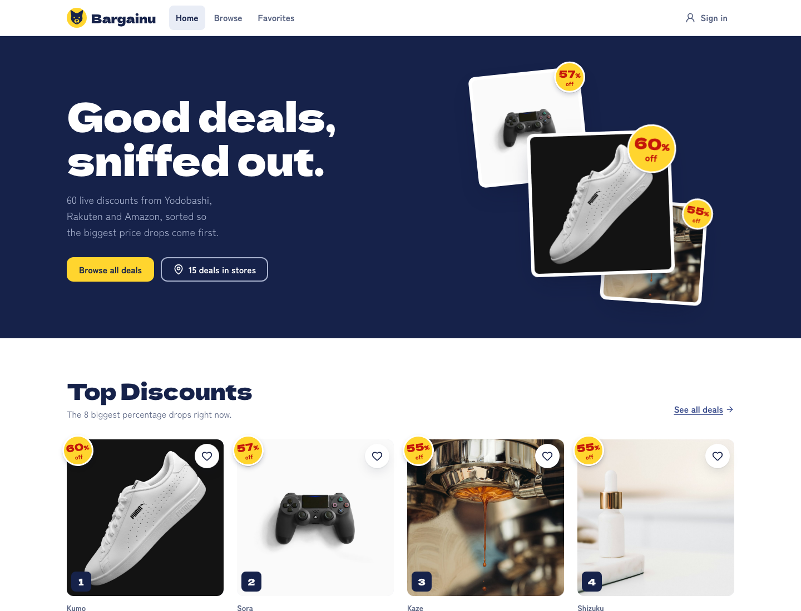
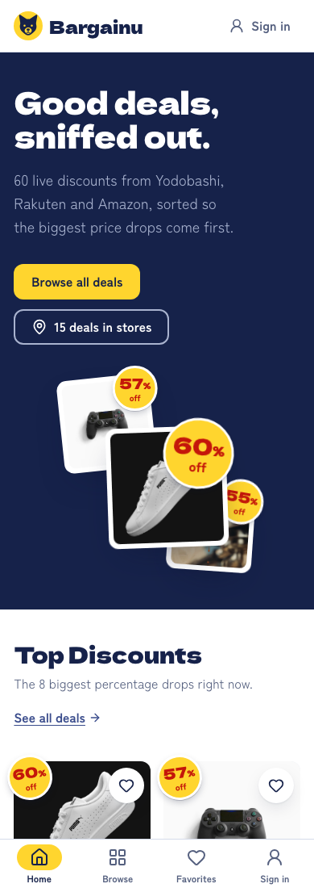
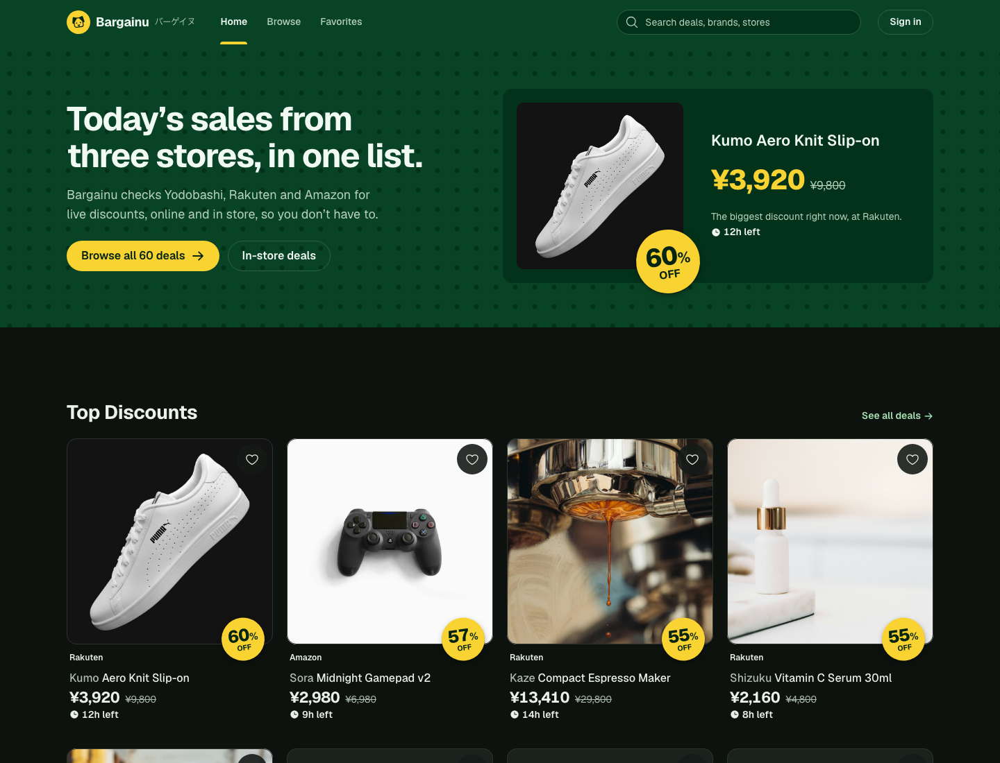
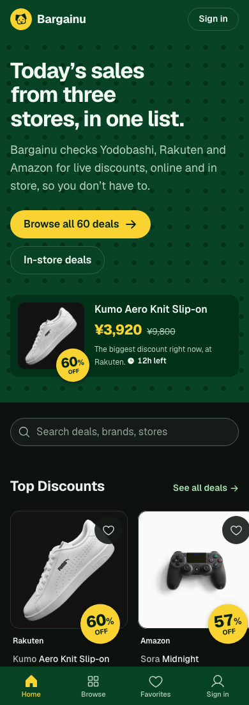
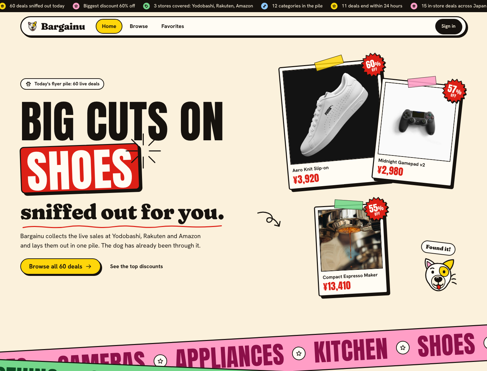
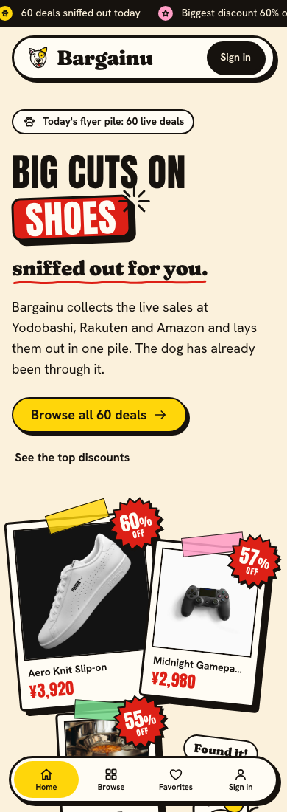

Prototype 1
Default stack
frontend-design + web-design-guidelines + Emil Kowalski's design engineering skill.
Open prototype 1Bargainu (バーゲイヌ, bargain + 犬) collects discounts from Japanese online stores in one place. These are three takes on the finished v1 app. Each has the same five screens and the same fake data, and only the design recipe differs. Pick the one we build on.


frontend-design + web-design-guidelines + Emil Kowalski's design engineering skill.
Open prototype 1

Taste Skill for generation, Impeccable for critique, audit, polish and the detector pass.
Open prototype 2

No design skill. Direction taken from two Awwwards e-commerce sites and a footer.design entry, with motion from the fancy component library.
Open prototype 3